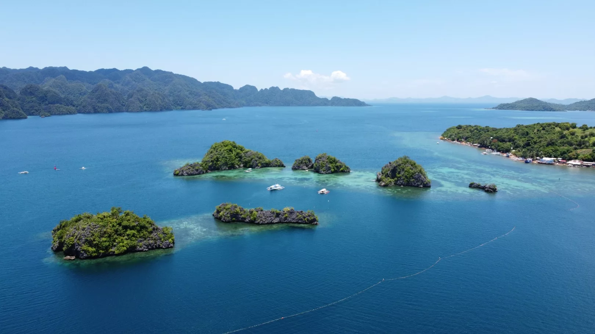

ABOUT TUBBATAHA REEFS NATURAL PARK
Tubbataha Reefs Natural Park, located in the middle of the Sulu Sea east of Palawan, is the Philippines' premier marine sanctuary and a UNESCO World Heritage Site. Covering nearly 100,000 hectares across two atolls and the Jessie Beazley Reef, it is one of the most biodiverse underwater ecosystems in the world.
Home to over 700 species of fish, 360 species of coral, 11 species of sharks, manta rays, whale sharks, hawksbill turtles, and massive schools of pelagic fish, Tubbataha is considered the crown jewel of Philippine diving. Accessible only by liveaboard boat and open just from March to June each year, it remains one of the healthiest and least-exploited reef systems on Earth.